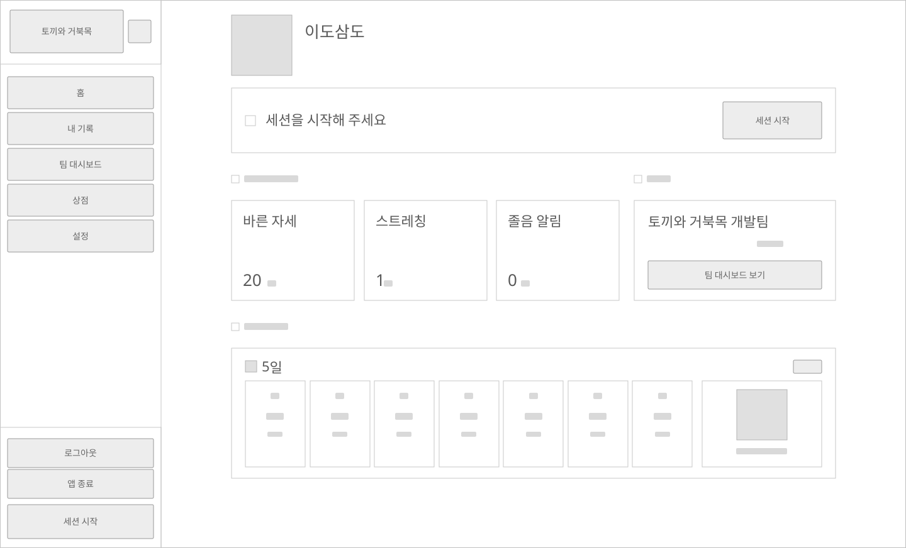
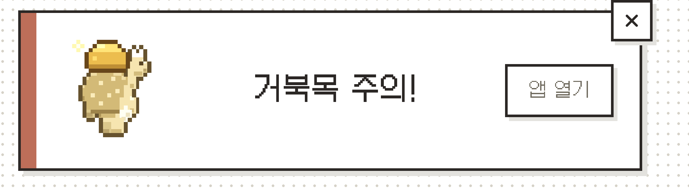
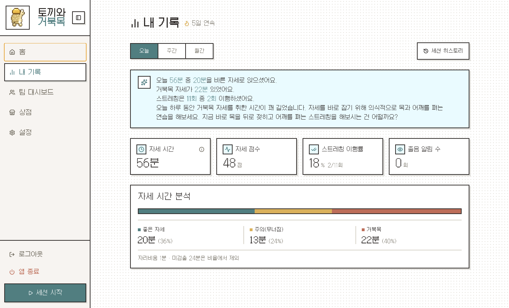

SSAFY 공통 프로젝트 — 토끼와 거북목
AI에게 맡기기 전에, 틀린 걸
판별할 기준부터 만들었다
기술 스택
서비스 소개
웹캠으로 작업 자세를 실시간 감지하는 데스크톱 앱입니다
장시간 모니터 앞에서 일할 때 무너지는 자세는 본인이 알아차리기 어렵습니다. 토끼와 거북목은 바른 작업 자세 습관 형성을 돕기 위해 기획한 앱으로, 웹캠 영상을 사용자 PC 안에서만 분석해 자세를 판정하고 알림을 보냅니다. 영상과 좌표는 서버로 전송하지 않으며, 네트워크는 최초 AI 모델 다운로드 시에만 사용합니다.
실시간 알림 3종 — 개별 토글 가능
자세 · 화면 근접 · 졸음을 감지합니다. 자세는 좋음 / 주의 / 거북목 / 미검출 4단계로 판정하고, 졸음은 얼굴 모델의 깜박임 지표로 잡습니다.
무효화 감지 2종 — 항상 동작
자리비움 · 노트북 젖힘은 판정 기준 자체가 무효가 되는 상태라 알림을 끌 수 없고, 사용자가 처리해야 판정이 이어집니다.
감지 외에도 작업 시간이 끝나면 스트레칭을 제안하고 동작 수행 여부를 웹캠으로 판정하며, 팀 모드에서는 정해진 시각에 팀원들과 함께 스트레칭합니다. 세션 참여와 좋은 자세 유지로 골드를 받아 캐릭터를 꾸미고(트레이 아이콘에도 반영), 바른 자세 시간·시간대별 그래프·연속 기록을 대시보드로 확인합니다. Electron + React 프론트에 Spring Boot 백엔드(WebSocket·Spring AI), MySQL·Redis, Jenkins·Caddy 기반 EC2 배포로 구성했습니다.
위기 1 — AI 산출물 혼선
AI가 만든 문서가 늘수록
혼란도 늘었습니다
팀원 각자가 생성형 AI로 산출물을 만들자, 같은 기능을 서로 다르게 이해하는 일이 생겼습니다. 같은 질문에도 시점·사람·모델에 따라 AI의 답이 달라졌고, 문서끼리 서로 충돌했습니다. 합의된 기준이 없는 AI 활용은 문서가 늘어날수록 혼란을 키웁니다. 팀장으로서 먼저 한 일은 코드가 아니라 기준을 만드는 것이었습니다.
극복 — 기준 수립
와이어프레임 30장과
한 줄씩 검수한 명세서
피그마 와이어프레임 약 30장 직접 제작
화면 요소 단위로 팀 워크숍을 진행해 모두가 같은 그림을 보고 논의하게 했습니다.
AI 생성 명세서를 사람이 한 줄씩 검수
검수를 통과한 문서만 기준 문서로 확정했습니다. AI 산출물은 초안으로만 다뤘습니다.

와이어프레임 — 홈 화면 (피그마, 직접 제작)

구현 — 같은 화면의 실배포 버전
위기 2 — AI 모듈 지연
AI 모듈이 완성되기 전에
나머지를 먼저 완성했습니다
감지 엔진(MediaPipe)의 완성이 늦어지면 알림·세션 등 프론트 전체가 대기해야 하는 일정 위험이 있었습니다. 기다리는 대신 결과 타입을 먼저 합의하고, 나머지를 병렬로 완성하는 쪽을 택했습니다.
감지 결과 타입만 계약으로 정의
MediaPipe 감지 엔진이 완성되기 전에, 그 출력 타입부터 팀 계약으로 고정했습니다.
시뮬레이터로 알림·세션 로직 먼저 완성
계약된 타입을 대신 생성하는 시뮬레이터로 알림과 세션 로직을 먼저 개발했습니다.
알림 규칙은 순수 함수로 분리해 테스트 40건
세션 18건·알림 22건의 테스트로 계약이 지켜지는지 상시 검증했습니다.
AI 모듈 투입 시 알림 코드 무수정
실제 감지 엔진이 들어왔을 때 알림 코드는 수정 없이 그대로 동작했습니다.

계약대로 동작한 알림 — 감지 엔진 교체 전후 동일 코드
위기 3 — 배포 후 발견된 문제
사용자 피드백 27건을 반영했습니다
실배포 후 사용자 테스트에서 27건의 피드백을 받았고, 그중 시스템의 기준 자체를 바꾼 위기 두 건을 이렇게 극복했습니다.
사례 1 — "홈과 기록의 스트릭 숫자가 다름"
화면마다 다른 스트릭
홈과 내 기록이 서로 다른 숫자를 보여줘 사용자가 혼란을 겪었습니다.
원인 분해 → 지표 정의 확정
원인을 네 갈래로 분해해 추적하고, 집계 기준(workSeconds vs effectiveMonitoringSeconds)을 하나로 확정·문서화해 백엔드 수정을 조율했습니다. 이후 모든 화면이 같은 숫자를 보여줍니다.
홈 — 연속 기록

내 기록 — 같은 정의로 집계된 연속 기록
사례 2 — LLM 리포트가 45분을 "2시간 43분"으로
LLM이 수치까지 서술
리포트 문장 안에서 LLM이 수치를 지어내는 환각이 발생했습니다.
역할 분리
수치는 서버가 확정하고 LLM은 판단 문장만 쓰도록 역할을 나눴고, 이 원칙을 팀 규칙으로 채택했습니다.
결과지표
실배포 + 사용자 피드백
27건 반영
테스트
40건 세션 18 + 알림 22
develop 머지 (팀 1위)
77건 · 커밋 153건
와이어프레임
30장
회고
이 프로젝트에서 제 역할은 AI 기능을 구현하는 것이 아니라, AI를 쓰는 팀을 운영하는 것이었습니다. 기준 문서와 타입 계약이 있었기 때문에 다섯 명이 병렬로 작업해도 결과가 하나로 모였습니다.